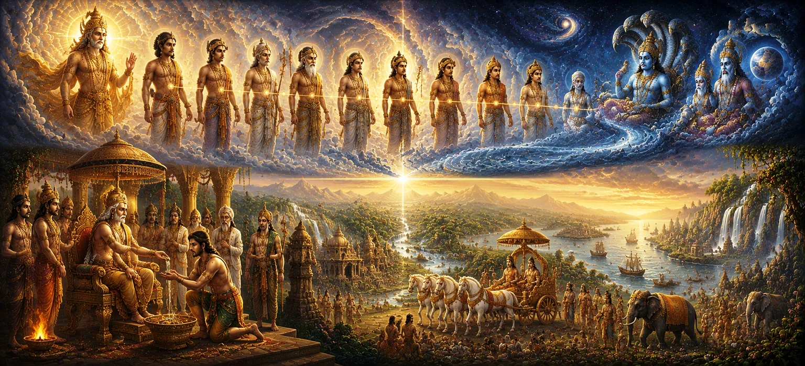

From Satyavrata to Sagara
Following the broad ancestral framework of the Manu lineage established in Chapter 37, the thirty-eighth chapter of Uma Samhita narrows its focus into a specific, highly illustrious branch of the Solar Dynasty, tracing the remarkable lineage from Satyavrata down to the legendary King Sagara.
This chapter details the trials, triumphs, and righteous governance of monarchs who navigated immense challenges to uphold truth, secure their realms, and establish enduring legacies.
Through these captivating historical accounts, the scripture illustrates how divine grace sustains those who walk firmly on the path of duty and dharma.
Chapter 38 Highlights
Satyavrata's Chronicle
Explores the pivotal legacy of Satyavrata and his transition into historical prominence.
Solar Dynasty Lineage
Traces the chronological link of successive kings bridging generations.
Trials and Resilience
Highlights how rulers overcame existential challenges through moral strength.
Rise of King Sagara
Details the advent of King Sagara and his powerful empire-building feats.
Spiritual Guidance
Emphasizes the crucial counsel of sages in guiding royal decision-making.
Eternal Legacy
Connects earthly sovereignty with the overarching cosmic will of Lord Shiva.
Core Topics in This Chapter
- 01 Prologue to the Lineage of Satyavrata →
- 02 The Transition of the Crown and Early Struggles →
- 03 Chronicle of Intermediate Solar Monarchs →
- 04 Moral Trials and Steadfastness in Dharma →
- 05 The Guiding Light of Sages and Preceptors →
- 06 The Advent and Birth of King Sagara →
- 07 King Sagara's Triumphs and Realm Expansion →
- 08 Invocation of Divine Blessings and Protection →
- 09 Reflections on Duty, Power, and Legacy →
- 10 Transition to the Broader Solar Dynasty →
Prologue to the Lineage of Satyavrata
Chapter 38 opens by focusing on Satyavrata, a central figure in ancient chronicles whose commitment to truth set a powerful benchmark for all subsequent rulers in the Solar Dynasty.
The text explains how Satyavrata navigated complex political and personal trials, maintaining his integrity even when circumstances seemed overwhelmingly adverse.
His foundational resolve became the bedrock upon which future generations built their royal and ethical identities.
The Transition of the Crown and Early Struggles
The narrative chronicles the shifting fortunes of the royal house as power passed from one generation to the next. Early successors faced external threats and internal dissensions that tested their resolve.
Through patience, strategic wisdom, and unyielding adherence to righteousness, these monarchs successfully stabilized their kingdoms and protected their subjects.
These early struggles taught vital lessons about leadership, proving that true authority is forged in the crucible of duty and selflessness.
Chronicle of Intermediate Solar Monarchs
The text meticulously lists the intermediate kings who bridged the gap between Satyavrata and King Sagara. Each ruler contributed uniquely to the cultural, architectural, and spiritual growth of the realm.
Under their stewardship, cities expanded, trade flourished, and centers of Vedic learning received royal patronage, ensuring intellectual and material prosperity.
These reigns served as pillars of stability during a dynamic and formative era of ancient civilization.
Moral Trials and Steadfastness in Dharma
A recurring theme in this chapter is the confrontation with moral dilemmas. Kings were frequently tested by situations where personal desire clashed with strict ethical obligations.
Those who chose dharma over comfort earned eternal renown, while those who faltered faced severe repercussions, serving as cautionary examples for future leaders.
The scripture emphasizes that maintaining moral clarity is the ultimate duty of a sovereign.
The Guiding Light of Sages and Preceptors
Throughout the chronicle from Satyavrata to Sagara, enlightened rishis played an indispensable role. Whenever the royal house faced grave crises, spiritual preceptors provided profound counsel.
This alliance between temporal power and spiritual wisdom ensured that statecraft remained aligned with cosmic laws rather than transient political ambition.
Rituals and sacrifices performed under sage guidance purified the realm and invoked divine protection.
The Advent and Birth of King Sagara
The chapter builds toward its climax with the birth and rise of the legendary King Sagara. His advent marked a dramatic turning point in the history of the Solar Dynasty.
Born amidst unique circumstances and trained rigorously in arts, sciences, and warfare, Sagara displayed extraordinary leadership qualities from his youth.
His destiny was intertwined with monumental tasks that would reshape the geopolitical and spiritual landscape of ancient Bharat.
King Sagara's Triumphs and Realm Expansion
Upon ascending the throne, King Sagara undertook extensive campaigns to subdue unruly elements, unify fragmented territories, and establish an era of unmatched law and order.
His military might and administrative brilliance turned his empire into a dominant force, respected and feared by neighboring powers.
Yet, Sagara remained deeply devoted to righteousness, using his supreme authority to protect the weak and support spiritual endeavors.
Invocation of Divine Blessings and Protection
Throughout their reigns, and particularly under Sagara, the monarchs realized that human effort alone is insufficient without supreme grace. They continuously invoked Lord Shiva and divine mothers for protection.
Temples were built, sacred rites were observed punctually, and the populace lived in an atmosphere of deep spiritual devotion and harmony.
This divine connection shielded the kingdom from natural calamities and internal discord.
Reflections on Duty, Power, and Legacy
The narrative pauses to reflect on the nature of royal power. It teaches that kingdoms rise and fall, but the merit of righteous governance echoes eternally across time.
Monarchs like Satyavrata and Sagara understood that they were merely custodians of a divine trust, responsible for handing over a better world to the next generation.
This perspective kept them humble in victory and resolute in defeat.
Transition to the Broader Solar Dynasty
As Chapter 38 reaches its conclusion, it seamlessly bridges into the next phase of the narrative. Having charted the intense lineage from Satyavrata to Sagara, the text prepares to survey the broader landscape of Solar Dynasty kings.
Readers are left with a profound appreciation of how individual heroism and divine alignment shaped the golden chapters of ancient history.
Key Teachings of Chapter 38
Truth as Foundation
Satyavrata's unwavering commitment established an enduring benchmark for rulers.
Forged in Struggle
Early royal trials built the resilience and wisdom required for grand empire building.
Sage Guidance
Collaboration with spiritual preceptors keeps temporal power aligned with cosmic laws.
The Might of Sagara
King Sagara's advent brought unmatched unification, strength, and order to the realm.
Moral Responsibility
Sovereigns are custodians of a divine trust, responsible for protecting the vulnerable.
Divine Grace
Devotion to Lord Shiva and righteousness ensures eternal legacy and protection.
Spiritual Reflection
Chapter 38 offers a stirring narrative of how individual determination, shaped by moral rigor and spiritual guidance, can alter the course of history. From the foundational truthfulness of Satyavrata to the mighty unification achieved by King Sagara, the Solar Dynasty stands as a testament to what can be accomplished when earthly power serves higher divine principles. These historical figures remind us that every challenge we face is an opportunity to choose dharma over comfort. By anchoring our lives in integrity, seeking wise counsel, and offering our efforts in devotion to Lord Shiva, we too build an inner kingdom of peace, strength, and lasting spiritual merit.
Living the Message of Chapter 38
Apply the lessons of Chapter 38 by confronting your personal challenges with moral courage and steadfast honesty, drawing inspiration from Satyavrata's commitment to truth.
Cultivate resilience in times of difficulty, knowing that struggles often serve to forge inner strength and character.
Seek out wise mentors, act as a responsible custodian of your duties, and dedicate all your endeavors in humble devotion to Lord Shiva.
Key Spiritual Concepts
Unshakable dedication to truth and integrity under all circumstances.
The illustrious Solar Dynasty tracing its descent from the sun and Manu.
Spiritual instruction received by temporal rulers from enlightened sages.
The mighty valor and unifying prowess demonstrated by King Sagara.
The supreme duty of a sovereign to protect righteousness and the vulnerable.
Supreme divine grace invoked through rituals, devotion, and righteous living.
Chapter Summary
Uma Samhita Chapter 38 presents a captivating royal chronicle focusing on the specific branch of the Solar Dynasty from Satyavrata to King Sagara. It highlights Satyavrata's foundational commitment to truth, the trials and resilience of intermediate monarchs, and the indispensable guidance provided by spiritual preceptors. The narrative culminates in the birth, rise, and expansive governance of King Sagara, who unified territories and established a robust era of law, order, and righteousness. By examining how these historical leaders aligned temporal power with divine principles, the chapter sets a magnificent stage for surveying the broader kings of the Solar Dynasty in Chapter 39.
Frequently Asked Questions
① What is the primary focus of Uma Samhita Chapter 38?
The primary focus is the specific historical trajectory and royal chronicle of emperors in the Solar Dynasty from Satyavrata to the legendary King Sagara.
② How does Chapter 38 follow Chapter 37?
While Chapter 37 establishes the broad ancestral and branching framework of the Manu lineage, Chapter 38 narrows down into this specific, illustrious royal line.
③ Who is featured prominently in this chapter's narrative?
Key figures include Satyavrata, intermediate monarchs of the lineage, and the mighty King Sagara whose reign left a profound mark on ancient history.
④ What moral lessons are embedded in the accounts of these monarchs?
The accounts highlight unwavering adherence to truth, overcoming adversity, fulfilling royal duties, and seeking divine grace.
⑤ How does Chapter 38 connect to Chapter 39?
Chapter 38 provides the direct historical lead-in to Chapter 39, which continues surveying the broader kings of the Solar Dynasty.
⑥ What is the overarching spiritual theme of these historical chronicles?
They demonstrate that true sovereignty and lasting legacy are achieved through alignment with dharma and devotion to Lord Shiva.
“When temporal power is guided by truth and devotion to Lord Shiva, empires become vessels of eternal dharma.”
Continue Through Uma Samhita
Chapter 38 explores the remarkable royal line from Satyavrata to King Sagara. With this chapter concluded, proceed into Chapter 39 to survey the broader kings of the Solar Dynasty.